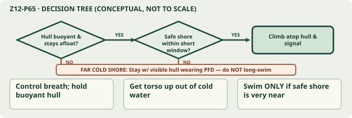

Z12-P65 · Extreme environments · New manuscript
Stay with a swamped buoyant hull rather than attempting long cold-water swims
Maximize visibility and survival time after capsizing by remaining with floating craft unless safe shore is immediately reachable.
When it applies · Capsized or swamped canoes, kayaks, small boats and open-water marine emergencies.
Equipment · Worn USCG-approved PFD, buoyant hull and waterproof distress signals attached to person.

Actions
- Control cold-shock breathing first while holding onto the capsized or swamped buoyant craft—most modern small boats and kayaks remain afloat even when flooded, giving critical extra flotation and a vastly larger visual target for Coast Guard/SAR aircraft.[X05, X02, X03]
- Climb as high out of cold water onto the overturned hull or inside a swamped stable craft as safely possible—body heat drains roughly 25 times faster in cold water than in air of the same temperature.[X03, X02, X05]
- Abandon a floating hull to swim for shore ONLY if calm safe shore is very close (well inside your short ~10-minute cold-water functional window), current is not pushing you away, you wear a PFD and staying puts you in immediate danger (waterfall, rocks, sinking hull).[X03, X05, X04]
Failure recognition · Leaving an overturned floating aluminum boat half a mile offshore in 45°F water to swim for land, losing muscle control halfway and drowning.[X02, X03, X05]
Verify · Confirm all passengers stay together holding or atop the buoyant hull wearing buckled PFDs and activate VHF/PLB/visual signals.[X05, X04, N05, ED]
Stop or change course · Never dive back underwater inside a sinking cabin or swim away from a buoyant hull into distant cold open water.[X02, X03, X05]
Evidence and editorial notes
- N05 · NOAA · Search and Rescue Satellite Aided Tracking (SARSAT) (current web edition)
- Section: SARSAT Beacons > PLB, EPIRB and Registration · Conditions: Emergency satellite distress signaling (406 MHz PLBs and EPIRBs)
Support: Registered 406 MHz Personal Locator Beacons transmit distress alerts via NOAA SARSAT satellites directly to rescue coordination centers with no subscription; registration with NOAA is legally required and must stay current.
Limitations: PLBs are one-way distress alerts only (no two-way texting), require clear sky view and must be reserved for grave and imminent danger. · Conflicting evidence: Distinguishes one-way 406 MHz PLBs from commercial two-way satellite messengers.
Editorial note: Anchors beacon selection, sky-view limits and registration cards in Z11. · Specialist reviewer: Search and rescue and emergency communications
Primary source · checked 2026-11-24 - X02 · Minnesota DNR · Cold Water Safety (current web edition)
- Section: Cold Water Safety > Cold Shock, Swim Failure and Hypothermia · Conditions: Immersion in water below 70°F (especially below 50°F / winter ice water)
Support: Cold-water immersion triggers immediate involuntary gasp and hyperventilation (cold shock in the first 1–3 minutes), followed by rapid swimming failure (within ~10–15 minutes) before core hypothermia develops; wearing a fastened life jacket keeps the airway above water.
Limitations: Strong swimmers drown rapidly from cold shock and muscle incapacitation without flotation. · Conflicting evidence: Refutes myth that hypothermia is the only immediate cold-water killer.
Editorial note: Core physiological evidence for Z12 ice-breakthrough and maritime immersion cards. · Specialist reviewer: Cold-water rescue and wilderness medicine
Primary source · checked 2026-11-24 - X03 · NWS · Cold Water Hazards and Safety (current web edition)
- Section: Cold Water Hazards > 1-10-1 Principle and Survival Actions · Conditions: Unexpected immersion in cold lakes, rivers, coastal or marine waters
Support: Control breathing during initial cold shock, use the brief window of functional muscle control to self-exit or secure flotation/rescue aid, and conserve heat while awaiting rescue rather than attempting long cold swims.
Limitations: Exact individual survival minutes vary widely with body size, clothing, sea state and water temperature. · Conflicting evidence: None; aligns with MN-COLDW and USCG guidance.
Editorial note: Anchors cold-water immersion decision thresholds in Z12. · Specialist reviewer: Cold-water rescue and emergency medicine
Primary source · checked 2026-11-24 - X04 · US Coast Guard · Wearing Your Life Jacket (current web edition)
- Section: Wearing Your Life Jacket > Fit, Flotation and Cold Water · Conditions: Boating, paddling, coastal craft and icy-shoreline marine operations
Support: A properly fitted, buckled U.S. Coast Guard-approved life jacket matched to user weight and activity prevents cold-shock drowning and preserves consciousness time after capsizing—stowed jackets are rarely put on in time during sudden immersion.
Limitations: Inflatable PFDs require arming inspection and are unsuitable for high-impact whitewater or non-swimmers per label. · Conflicting evidence: None; aligns with USCG-SAFE.
Editorial note: Grounds PFD readiness and maritime abandonment cards in Z12. · Specialist reviewer: Maritime safety and search and rescue
Primary source · checked 2026-11-24 - X05 · US Coast Guard · Boating Safety Resource Center (current web edition)
- Section: Boating Safety > Float Plans, VHF-DSC, Weather and Abandon-Ship Limits · Conditions: Inland large lakes, coastal waters and maritime travel
Support: File a float plan, monitor marine weather and VHF Channel 16/DSC where equipped, stay with a swamped buoyant hull when safer than swimming to distant shore and maintain visual/electronic distress signals.
Limitations: Open-water craft operations require vessel-specific seamanship beyond general survival cards. · Conflicting evidence: None; aligns with NOAA-MARINE and NOAA-SARSAT.
Editorial note: Anchors maritime communication, hull-stay and distress cards in Z12. · Specialist reviewer: Maritime safety and USCG-aligned review
Primary source · checked 2026-11-24
Source lineage · USCG boating safety and NWS cold water; new manuscript · Classification · New manuscript.